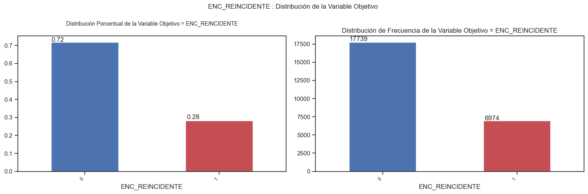

2. Comprensión de los datos
A continuación, se describe el análisis de los datos disponibles para la construcción del modelo
2.1 Recopilación de datos iniciales
Cual fue la manera en que se llevó a cabo el proceso de recopilación de los datos, indicando si los datos utilizados corresponden a toda una población o si son una muestra representativa de la misma, especificando el porcentaje que representan en relación a la población en cuestión. Además, identificar las razones por las cuales existen valores perdidos en los datos. Asimismo, indicar si los datos han sido sometidos a algún tipo de tratamiento o transformación, o si se encuentran en su formato original
| Ítem | Descripción |
|---|---|
| Fuente de Datos | El conjunto de datos es una extracción del conjunto de datos original liberado por Instituto Nacional Penitenciario y Carcelario en enero del 2022. Los datos corresponden a las personas que han sido sindicadas por uno o más delitos dese el año 1997 hasta el año año 2021.\nEl dominio del conjunto de datos es la Justicia y Derecho en Colombia.\nEl dataset contiene Variables demográficas como sexo, edad, nivel educativo, estado civil. El historial delictivo, como el tipo de delito, si reincide o no, y los meses de condena asignados. |
| Filas | 19770 |
| Columnas | 20 |
| Atributos sensibles | [ENC_GENERO] |
| Atributo de clase | ENC_REINCIDENTE |
| Formato | |
| Descripción | El conjunto de datos es una extracción del conjunto de datos original liberado por Instituto Nacional Penitenciario y Carcelario en enero del 2022. Los datos corresponden a las personas que han sido sindicadas por uno o más delitos dese el año 1997 hasta el año año 2021.\nEl dominio del conjunto de datos es la Justicia y Derecho en Colombia.\nEl dataset contiene Variables demográficas como sexo, edad, nivel educativo, estado civil. El historial delictivo, como el tipo de delito, si reincide o no, y los meses de condena asignados. |
2.2 Descripción de los datos
En esta sección se busca comprender la naturaleza y las características de cada atributo en el conjunto de datos. Esto implica examinar el tipo de dato, la escala de medición, el rango de valores posibles, la presencia de valores atípicos o perdidos, y cualquier otra información relevante relacionada con cada atributo
| Atributo | Descripción |
|---|---|
| ENC_HOMICIDIO | Condena por el delito de homicidio |
| ENC_HURTO | Condena por el delito de hurto según |
| ENC_FATRAPORTE_ARMAS_MUNICIONES | Condena por fabricación, tráfico o porte de armas de fuego y municiones |
| ENC_TRAFAPORTE_ESTUPEFACIENTES | Condena por tráfico, fabricación o porte de estupefacientes |
| ENC_CONCIERTO_DELINQUIR | Condena por concierto para delinquir |
| ENC_FATRAPORTE_ARMAS_ACCESORIOS_MUNICIONES | Condena por fabricación, tráfico o porte de armas, municiones de uso restringido o explosivos |
| ENC_ACTOS_SEXUALES_MENOR_14 | Condena por actos sexuales con persona menor de 14 años |
| ENC_ACC_CARNAL_14 | Condena por acceso carnal con persona menor de 14 años |
| ENC_ANNO_INGRESO | Año de ingreso al sistema penitenciario (formato AAAA), según fecha de la sentencia que ordena privación de la libertad. |
| ENC_INTRAMUROS | Régimen de cumplimiento de la pena: 1 = intramuros (establecimiento carcelario); 0 = extramuros (prisión domiciliaria o vigilancia electrónica) |
| ENC_MESES_CONDENA | Duración de la pena privativa de la libertad en meses, calculada a partir de la sentencia firme. |
| ENC_RANGOS_EDAD_INPEC | Categoría de edad al ingreso: 'Entre 18 y 25 años', 'Entre 26 y 40 años', 'Entre 41 y 60 años', 'Mayor de 60 años' |
| ENC_GENERO | Género de la persona: 1 = masculino, 0 = femenino |
| ENC_NIVEL_EDUCATIVO | Nivel educativo al momento de la sentencia: 'Sin educación formal', 'Básica primaria', 'Básica secundaria', 'Media', 'Técnico/Tecnólogo', 'Universitario o superior' |
| ENC_REGIONAL_CENTRAL | Regional Central del INPEC |
| ENC_REGIONAL_OCCIDENTE | Regional Occidente del INPEC |
| ENC_REGIONAL_NOROESTE | Regional Noroeste del INPEC |
| ENC_REGIONAL_NORTE | Regional Norte del INPEC |
| ENC_REGIONAL_ORIENTE | Regional Oriente del INPEC |
| ENC_REGIONAL_VIEJO_CALDAS | Regional Viejo Caldas del INPEC |
Estadística atributos ordinales y nominales
| Atributo | Tipo | Cantidad | Valores unicos | Mas frecuente | Menos frecuente | Valores nulos |
|---|---|---|---|---|---|---|
| ENC_HOMICIDIO | category | 19770 | 2 | 0 | 1 | 0 |
| ENC_HURTO | category | 19770 | 2 | 0 | 1 | 0 |
| ENC_FATRAPORTE_ARMAS_MUNICIONES | category | 19770 | 2 | 0 | 1 | 0 |
| ENC_TRAFAPORTE_ESTUPEFACIENTES | category | 19770 | 2 | 0 | 1 | 0 |
| ENC_CONCIERTO_DELINQUIR | category | 19770 | 2 | 0 | 1 | 0 |
| ENC_FATRAPORTE_ARMAS_ACCESORIOS_MUNICIONES | category | 19770 | 2 | 0 | 1 | 0 |
| ENC_ACTOS_SEXUALES_MENOR_14 | category | 19770 | 2 | 0 | 1 | 0 |
| ENC_ACC_CARNAL_14 | category | 19770 | 2 | 0 | 1 | 0 |
| ENC_INTRAMUROS | category | 19770 | 2 | 1 | 0 | 0 |
| ENC_RANGOS_EDAD_INPEC | category | 19770 | 10 | 2 | 10 | 0 |
| ENC_GENERO | category | 19770 | 2 | 1 | 0 | 0 |
| ENC_NIVEL_EDUCATIVO | category | 19770 | 9 | 3 | 9 | 0 |
| ENC_REGIONAL_CENTRAL | category | 19770 | 2 | 0 | 1 | 0 |
| ENC_REGIONAL_OCCIDENTE | category | 19770 | 2 | 0 | 1 | 0 |
| ENC_REGIONAL_NOROESTE | category | 19770 | 2 | 0 | 1 | 0 |
| ENC_REGIONAL_NORTE | category | 19770 | 2 | 0 | 1 | 0 |
| ENC_REGIONAL_ORIENTE | category | 19770 | 2 | 0 | 1 | 0 |
| ENC_REGIONAL_VIEJO_CALDAS | category | 19770 | 2 | 0 | 1 | 0 |
| ENC_REINCIDENTE | category | 19770 | 2 | 0 | 1 | 0 |
Estadística atributos continuos y discretos
| Atributo | Tipo | Cantidad | Minimo | Mediana | Maximo | Promedio | Desv Std | % Nulos | % Ceros |
|---|---|---|---|---|---|---|---|---|---|
| ENC_ANNO_INGRESO | int64 | 19770 | 1997 | 2018.0 | 2021 | 2017.615933 | 2.395119 | 0.0 | 0.000000 |
| ENC_MESES_CONDENA | int64 | 19770 | 0 | 91.0 | 720 | 129.380931 | 113.355656 | 0.0 | 0.025291 |
2.3 Exploración de datos
Se realiza el análisis de las distribuciones de las variables de forma individual como relacionadas con la clase y los atributos sensibles
Relación entre atributos
| attribute1 | attribute2 | proporcion | tipo | concern |
|---|---|---|---|---|
| ENC_HOMICIDIO | ENC_GENERO | 0.892985 | ALTO | Alta asociación entre ENC_HOMICIDIO=0 y ENC_GENERO=1 (proporción 0.893), involucrando atributo sensible 'ENC_GENERO', lo cual podría indicar posible sesgo de discriminación. |
| ENC_HOMICIDIO | ENC_REINCIDENTE | 0.701332 | ALTO | Alta asociación entre ENC_HOMICIDIO=0 y ENC_REINCIDENTE=0 (proporción 0.701), indicando posible sobreajuste o dependencia fuerte que podría afectar la generalización del modelo. |
| ENC_HURTO | ENC_GENERO | 0.898766 | ALTO | Alta asociación entre ENC_HURTO=0 y ENC_GENERO=1 (proporción 0.899), involucrando atributo sensible 'ENC_GENERO', lo cual podría indicar posible sesgo de discriminación. |
| ENC_HURTO | ENC_REINCIDENTE | 0.759287 | ALTO | Alta asociación entre ENC_HURTO=0 y ENC_REINCIDENTE=0 (proporción 0.759), indicando posible sobreajuste o dependencia fuerte que podría afectar la generalización del modelo. |
| ENC_FATRAPORTE_ARMAS_MUNICIONES | ENC_GENERO | 0.890951 | ALTO | Alta asociación entre ENC_FATRAPORTE_ARMAS_MUNICIONES=0 y ENC_GENERO=1 (proporción 0.891), involucrando atributo sensible 'ENC_GENERO', lo cual podría indicar posible sesgo de discriminación. |
| ENC_FATRAPORTE_ARMAS_MUNICIONES | ENC_REINCIDENTE | 0.733653 | ALTO | Alta asociación entre ENC_FATRAPORTE_ARMAS_MUNICIONES=0 y ENC_REINCIDENTE=0 (proporción 0.734), indicando posible sobreajuste o dependencia fuerte que podría afectar la generalización del modelo. |
| ENC_TRAFAPORTE_ESTUPEFACIENTES | ENC_GENERO | 0.942407 | ALTO | Alta asociación entre ENC_TRAFAPORTE_ESTUPEFACIENTES=0 y ENC_GENERO=1 (proporción 0.942), involucrando atributo sensible 'ENC_GENERO', lo cual podría indicar posible sesgo de discriminación. |
| ENC_TRAFAPORTE_ESTUPEFACIENTES | ENC_REINCIDENTE | 0.717503 | ALTO | Alta asociación entre ENC_TRAFAPORTE_ESTUPEFACIENTES=0 y ENC_REINCIDENTE=0 (proporción 0.718), indicando posible sobreajuste o dependencia fuerte que podría afectar la generalización del modelo. |
| ENC_CONCIERTO_DELINQUIR | ENC_GENERO | 0.918513 | ALTO | Alta asociación entre ENC_CONCIERTO_DELINQUIR=0 y ENC_GENERO=1 (proporción 0.919), involucrando atributo sensible 'ENC_GENERO', lo cual podría indicar posible sesgo de discriminación. |
| ENC_CONCIERTO_DELINQUIR | ENC_REINCIDENTE | 0.716650 | ALTO | Alta asociación entre ENC_CONCIERTO_DELINQUIR=0 y ENC_REINCIDENTE=0 (proporción 0.717), indicando posible sobreajuste o dependencia fuerte que podría afectar la generalización del modelo. |
| ENC_FATRAPORTE_ARMAS_ACCESORIOS_MUNICIONES | ENC_GENERO | 0.907252 | ALTO | Alta asociación entre ENC_FATRAPORTE_ARMAS_ACCESORIOS_MUNICIONES=0 y ENC_GENERO=1 (proporción 0.907), involucrando atributo sensible 'ENC_GENERO', lo cual podría indicar posible sesgo de discriminación. |
| ENC_FATRAPORTE_ARMAS_ACCESORIOS_MUNICIONES | ENC_REINCIDENTE | 0.715952 | ALTO | Alta asociación entre ENC_FATRAPORTE_ARMAS_ACCESORIOS_MUNICIONES=0 y ENC_REINCIDENTE=0 (proporción 0.716), indicando posible sobreajuste o dependencia fuerte que podría afectar la generalización del modelo. |
| ENC_ACTOS_SEXUALES_MENOR_14 | ENC_GENERO | 0.905270 | ALTO | Alta asociación entre ENC_ACTOS_SEXUALES_MENOR_14=0 y ENC_GENERO=1 (proporción 0.905), involucrando atributo sensible 'ENC_GENERO', lo cual podría indicar posible sesgo de discriminación. |
| ENC_ACTOS_SEXUALES_MENOR_14 | ENC_REINCIDENTE | 0.708336 | ALTO | Alta asociación entre ENC_ACTOS_SEXUALES_MENOR_14=0 y ENC_REINCIDENTE=0 (proporción 0.708), indicando posible sobreajuste o dependencia fuerte que podría afectar la generalización del modelo. |
| ENC_ACC_CARNAL_14 | ENC_GENERO | 0.908358 | ALTO | Alta asociación entre ENC_ACC_CARNAL_14=0 y ENC_GENERO=1 (proporción 0.908), involucrando atributo sensible 'ENC_GENERO', lo cual podría indicar posible sesgo de discriminación. |
| ENC_ACC_CARNAL_14 | ENC_REINCIDENTE | 0.715159 | ALTO | Alta asociación entre ENC_ACC_CARNAL_14=0 y ENC_REINCIDENTE=0 (proporción 0.715), indicando posible sobreajuste o dependencia fuerte que podría afectar la generalización del modelo. |
| ENC_ANNO_INGRESO | ENC_GENERO | 0.857143 | ALTO | Alta asociación entre ENC_ANNO_INGRESO=(1996.976, 2003.0] y ENC_GENERO=1 (proporción 0.857), involucrando atributo sensible 'ENC_GENERO', lo cual podría indicar posible sesgo de discriminación. |
| ENC_ANNO_INGRESO | ENC_REINCIDENTE | 1.000000 | ALTO | Alta asociación entre ENC_ANNO_INGRESO=(1996.976, 2003.0] y ENC_REINCIDENTE=0 (proporción 1.000), indicando posible sobreajuste o dependencia fuerte que podría afectar la generalización del modelo. |
| ENC_INTRAMUROS | ENC_GENERO | 0.865945 | ALTO | Alta asociación entre ENC_INTRAMUROS=0 y ENC_GENERO=1 (proporción 0.866), involucrando atributo sensible 'ENC_GENERO', lo cual podría indicar posible sesgo de discriminación. |
| ENC_INTRAMUROS | ENC_REINCIDENTE | 0.767452 | ALTO | Alta asociación entre ENC_INTRAMUROS=0 y ENC_REINCIDENTE=0 (proporción 0.767), indicando posible sobreajuste o dependencia fuerte que podría afectar la generalización del modelo. |
| ENC_MESES_CONDENA | ENC_GENERO | 0.892998 | ALTO | Alta asociación entre ENC_MESES_CONDENA=(-0.72, 180.0] y ENC_GENERO=1 (proporción 0.893), involucrando atributo sensible 'ENC_GENERO', lo cual podría indicar posible sesgo de discriminación. |
| ENC_MESES_CONDENA | ENC_REINCIDENTE | 0.696203 | ALTO | Alta asociación entre ENC_MESES_CONDENA=(-0.72, 180.0] y ENC_REINCIDENTE=0 (proporción 0.696), indicando posible sobreajuste o dependencia fuerte que podría afectar la generalización del modelo. |
| ENC_RANGOS_EDAD_INPEC | ENC_GENERO | 0.913060 | ALTO | Alta asociación entre ENC_RANGOS_EDAD_INPEC=1 y ENC_GENERO=1 (proporción 0.913), involucrando atributo sensible 'ENC_GENERO', lo cual podría indicar posible sesgo de discriminación. |
| ENC_RANGOS_EDAD_INPEC | ENC_REINCIDENTE | 0.851462 | ALTO | Alta asociación entre ENC_RANGOS_EDAD_INPEC=1 y ENC_REINCIDENTE=0 (proporción 0.851), indicando posible sobreajuste o dependencia fuerte que podría afectar la generalización del modelo. |
| ENC_NIVEL_EDUCATIVO | ENC_GENERO | 0.942263 | ALTO | Alta asociación entre ENC_NIVEL_EDUCATIVO=1 y ENC_GENERO=1 (proporción 0.942), involucrando atributo sensible 'ENC_GENERO', lo cual podría indicar posible sesgo de discriminación. |
| ENC_NIVEL_EDUCATIVO | ENC_REINCIDENTE | 0.741339 | ALTO | Alta asociación entre ENC_NIVEL_EDUCATIVO=1 y ENC_REINCIDENTE=0 (proporción 0.741), indicando posible sobreajuste o dependencia fuerte que podría afectar la generalización del modelo. |
| ENC_REGIONAL_CENTRAL | ENC_GENERO | 0.908797 | ALTO | Alta asociación entre ENC_REGIONAL_CENTRAL=0 y ENC_GENERO=1 (proporción 0.909), involucrando atributo sensible 'ENC_GENERO', lo cual podría indicar posible sesgo de discriminación. |
| ENC_REGIONAL_CENTRAL | ENC_REINCIDENTE | 0.720868 | ALTO | Alta asociación entre ENC_REGIONAL_CENTRAL=0 y ENC_REINCIDENTE=0 (proporción 0.721), indicando posible sobreajuste o dependencia fuerte que podría afectar la generalización del modelo. |
| ENC_REGIONAL_OCCIDENTE | ENC_GENERO | 0.908086 | ALTO | Alta asociación entre ENC_REGIONAL_OCCIDENTE=0 y ENC_GENERO=1 (proporción 0.908), involucrando atributo sensible 'ENC_GENERO', lo cual podría indicar posible sesgo de discriminación. |
| ENC_REGIONAL_OCCIDENTE | ENC_REINCIDENTE | 0.713577 | ALTO | Alta asociación entre ENC_REGIONAL_OCCIDENTE=0 y ENC_REINCIDENTE=0 (proporción 0.714), indicando posible sobreajuste o dependencia fuerte que podría afectar la generalización del modelo. |
| ENC_REGIONAL_NOROESTE | ENC_GENERO | 0.913033 | ALTO | Alta asociación entre ENC_REGIONAL_NOROESTE=0 y ENC_GENERO=1 (proporción 0.913), involucrando atributo sensible 'ENC_GENERO', lo cual podría indicar posible sesgo de discriminación. |
| ENC_REGIONAL_NOROESTE | ENC_REINCIDENTE | 0.714787 | ALTO | Alta asociación entre ENC_REGIONAL_NOROESTE=0 y ENC_REINCIDENTE=0 (proporción 0.715), indicando posible sobreajuste o dependencia fuerte que podría afectar la generalización del modelo. |
| ENC_REGIONAL_NORTE | ENC_GENERO | 0.908610 | ALTO | Alta asociación entre ENC_REGIONAL_NORTE=0 y ENC_GENERO=1 (proporción 0.909), involucrando atributo sensible 'ENC_GENERO', lo cual podría indicar posible sesgo de discriminación. |
| ENC_REGIONAL_NORTE | ENC_REINCIDENTE | 0.720887 | ALTO | Alta asociación entre ENC_REGIONAL_NORTE=0 y ENC_REINCIDENTE=0 (proporción 0.721), indicando posible sobreajuste o dependencia fuerte que podría afectar la generalización del modelo. |
| ENC_REGIONAL_ORIENTE | ENC_GENERO | 0.907682 | ALTO | Alta asociación entre ENC_REGIONAL_ORIENTE=0 y ENC_GENERO=1 (proporción 0.908), involucrando atributo sensible 'ENC_GENERO', lo cual podría indicar posible sesgo de discriminación. |
| ENC_REGIONAL_ORIENTE | ENC_REINCIDENTE | 0.717360 | ALTO | Alta asociación entre ENC_REGIONAL_ORIENTE=0 y ENC_REINCIDENTE=0 (proporción 0.717), indicando posible sobreajuste o dependencia fuerte que podría afectar la generalización del modelo. |
| ENC_REGIONAL_VIEJO_CALDAS | ENC_GENERO | 0.910360 | ALTO | Alta asociación entre ENC_REGIONAL_VIEJO_CALDAS=0 y ENC_GENERO=1 (proporción 0.910), involucrando atributo sensible 'ENC_GENERO', lo cual podría indicar posible sesgo de discriminación. |
| ENC_REGIONAL_VIEJO_CALDAS | ENC_REINCIDENTE | 0.719728 | ALTO | Alta asociación entre ENC_REGIONAL_VIEJO_CALDAS=0 y ENC_REINCIDENTE=0 (proporción 0.720), indicando posible sobreajuste o dependencia fuerte que podría afectar la generalización del modelo. |
| ENC_HOMICIDIO | ENC_HURTO | 0.708951 | ALTO | Alta asociación entre ENC_HOMICIDIO=0 y ENC_HURTO=0 (proporción 0.709), indicando posible sobreajuste o dependencia fuerte que podría afectar la generalización del modelo. |
| ENC_HOMICIDIO | ENC_FATRAPORTE_ARMAS_MUNICIONES | 0.805670 | ALTO | Alta asociación entre ENC_HOMICIDIO=0 y ENC_FATRAPORTE_ARMAS_MUNICIONES=0 (proporción 0.806), indicando posible sobreajuste o dependencia fuerte que podría afectar la generalización del modelo. |
| ENC_HOMICIDIO | ENC_TRAFAPORTE_ESTUPEFACIENTES | 0.725151 | ALTO | Alta asociación entre ENC_HOMICIDIO=0 y ENC_TRAFAPORTE_ESTUPEFACIENTES=0 (proporción 0.725), indicando posible sobreajuste o dependencia fuerte que podría afectar la generalización del modelo. |
| ENC_HOMICIDIO | ENC_CONCIERTO_DELINQUIR | 0.825645 | ALTO | Alta asociación entre ENC_HOMICIDIO=0 y ENC_CONCIERTO_DELINQUIR=0 (proporción 0.826), indicando posible sobreajuste o dependencia fuerte que podría afectar la generalización del modelo. |
| ENC_HOMICIDIO | ENC_FATRAPORTE_ARMAS_ACCESORIOS_MUNICIONES | 0.932592 | ALTO | Alta asociación entre ENC_HOMICIDIO=0 y ENC_FATRAPORTE_ARMAS_ACCESORIOS_MUNICIONES=0 (proporción 0.933), indicando posible sobreajuste o dependencia fuerte que podría afectar la generalización del modelo. |
| ENC_HOMICIDIO | ENC_ACTOS_SEXUALES_MENOR_14 | 0.929023 | ALTO | Alta asociación entre ENC_HOMICIDIO=0 y ENC_ACTOS_SEXUALES_MENOR_14=0 (proporción 0.929), indicando posible sobreajuste o dependencia fuerte que podría afectar la generalización del modelo. |
| ENC_HOMICIDIO | ENC_ACC_CARNAL_14 | 0.979819 | ALTO | Alta asociación entre ENC_HOMICIDIO=0 y ENC_ACC_CARNAL_14=0 (proporción 0.980), indicando posible sobreajuste o dependencia fuerte que podría afectar la generalización del modelo. |
| ENC_HOMICIDIO | ENC_ANNO_INGRESO | 0.000755 | BAJO | Baja asociación entre ENC_HOMICIDIO=0 y ENC_ANNO_INGRESO=(1996.976, 2003.0] (proporción 0.001), que sugiere baja dependencia entre estos atributos. |
| ENC_HOMICIDIO | ENC_INTRAMUROS | 0.621636 | ALTO | Alta asociación entre ENC_HOMICIDIO=0 y ENC_INTRAMUROS=1 (proporción 0.622), indicando posible sobreajuste o dependencia fuerte que podría afectar la generalización del modelo. |
| ENC_HOMICIDIO | ENC_MESES_CONDENA | 0.011669 | BAJO | Baja asociación entre ENC_HOMICIDIO=0 y ENC_MESES_CONDENA=(360.0, 540.0] (proporción 0.012), que sugiere baja dependencia entre estos atributos. |
| ENC_HOMICIDIO | ENC_RANGOS_EDAD_INPEC | 0.034802 | BAJO | Baja asociación entre ENC_HOMICIDIO=0 y ENC_RANGOS_EDAD_INPEC=8 (proporción 0.035), que sugiere baja dependencia entre estos atributos. |
| ENC_HOMICIDIO | ENC_NIVEL_EDUCATIVO | 0.020456 | BAJO | Baja asociación entre ENC_HOMICIDIO=0 y ENC_NIVEL_EDUCATIVO=1 (proporción 0.020), que sugiere baja dependencia entre estos atributos. |
| ENC_HOMICIDIO | ENC_REGIONAL_CENTRAL | 0.644289 | ALTO | Alta asociación entre ENC_HOMICIDIO=0 y ENC_REGIONAL_CENTRAL=0 (proporción 0.644), indicando posible sobreajuste o dependencia fuerte que podría afectar la generalización del modelo. |
| ENC_HOMICIDIO | ENC_REGIONAL_OCCIDENTE | 0.814044 | ALTO | Alta asociación entre ENC_HOMICIDIO=0 y ENC_REGIONAL_OCCIDENTE=0 (proporción 0.814), indicando posible sobreajuste o dependencia fuerte que podría afectar la generalización del modelo. |
| ENC_HOMICIDIO | ENC_REGIONAL_NOROESTE | 0.854819 | ALTO | Alta asociación entre ENC_HOMICIDIO=0 y ENC_REGIONAL_NOROESTE=0 (proporción 0.855), indicando posible sobreajuste o dependencia fuerte que podría afectar la generalización del modelo. |
| ENC_HOMICIDIO | ENC_REGIONAL_NORTE | 0.880903 | ALTO | Alta asociación entre ENC_HOMICIDIO=0 y ENC_REGIONAL_NORTE=0 (proporción 0.881), indicando posible sobreajuste o dependencia fuerte que podría afectar la generalización del modelo. |
| ENC_HOMICIDIO | ENC_REGIONAL_ORIENTE | 0.907743 | ALTO | Alta asociación entre ENC_HOMICIDIO=0 y ENC_REGIONAL_ORIENTE=0 (proporción 0.908), indicando posible sobreajuste o dependencia fuerte que podría afectar la generalización del modelo. |
| ENC_HOMICIDIO | ENC_REGIONAL_VIEJO_CALDAS | 0.898202 | ALTO | Alta asociación entre ENC_HOMICIDIO=0 y ENC_REGIONAL_VIEJO_CALDAS=0 (proporción 0.898), indicando posible sobreajuste o dependencia fuerte que podría afectar la generalización del modelo. |
| ENC_HURTO | ENC_FATRAPORTE_ARMAS_MUNICIONES | 0.755380 | ALTO | Alta asociación entre ENC_HURTO=0 y ENC_FATRAPORTE_ARMAS_MUNICIONES=0 (proporción 0.755), indicando posible sobreajuste o dependencia fuerte que podría afectar la generalización del modelo. |
| ENC_HURTO | ENC_TRAFAPORTE_ESTUPEFACIENTES | 0.718300 | ALTO | Alta asociación entre ENC_HURTO=0 y ENC_TRAFAPORTE_ESTUPEFACIENTES=0 (proporción 0.718), indicando posible sobreajuste o dependencia fuerte que podría afectar la generalización del modelo. |
| ENC_HURTO | ENC_CONCIERTO_DELINQUIR | 0.802810 | ALTO | Alta asociación entre ENC_HURTO=0 y ENC_CONCIERTO_DELINQUIR=0 (proporción 0.803), indicando posible sobreajuste o dependencia fuerte que podría afectar la generalización del modelo. |
| ENC_HURTO | ENC_FATRAPORTE_ARMAS_ACCESORIOS_MUNICIONES | 0.927485 | ALTO | Alta asociación entre ENC_HURTO=0 y ENC_FATRAPORTE_ARMAS_ACCESORIOS_MUNICIONES=0 (proporción 0.927), indicando posible sobreajuste o dependencia fuerte que podría afectar la generalización del modelo. |
| ENC_HURTO | ENC_ACTOS_SEXUALES_MENOR_14 | 0.929061 | ALTO | Alta asociación entre ENC_HURTO=0 y ENC_ACTOS_SEXUALES_MENOR_14=0 (proporción 0.929), indicando posible sobreajuste o dependencia fuerte que podría afectar la generalización del modelo. |
| ENC_HURTO | ENC_ACC_CARNAL_14 | 0.979781 | ALTO | Alta asociación entre ENC_HURTO=0 y ENC_ACC_CARNAL_14=0 (proporción 0.980), indicando posible sobreajuste o dependencia fuerte que podría afectar la generalización del modelo. |
| ENC_HURTO | ENC_ANNO_INGRESO | 0.000822 | BAJO | Baja asociación entre ENC_HURTO=0 y ENC_ANNO_INGRESO=(1996.976, 2003.0] (proporción 0.001), que sugiere baja dependencia entre estos atributos. |
| ENC_HURTO | ENC_INTRAMUROS | 0.649212 | ALTO | Alta asociación entre ENC_HURTO=0 y ENC_INTRAMUROS=1 (proporción 0.649), indicando posible sobreajuste o dependencia fuerte que podría afectar la generalización del modelo. |
| ENC_HURTO | ENC_MESES_CONDENA | 0.006648 | BAJO | Baja asociación entre ENC_HURTO=0 y ENC_MESES_CONDENA=(540.0, 720.0] (proporción 0.007), que sugiere baja dependencia entre estos atributos. |
| ENC_HURTO | ENC_RANGOS_EDAD_INPEC | 0.041467 | BAJO | Baja asociación entre ENC_HURTO=0 y ENC_RANGOS_EDAD_INPEC=8 (proporción 0.041), que sugiere baja dependencia entre estos atributos. |
| ENC_HURTO | ENC_NIVEL_EDUCATIVO | 0.023783 | BAJO | Baja asociación entre ENC_HURTO=0 y ENC_NIVEL_EDUCATIVO=1 (proporción 0.024), que sugiere baja dependencia entre estos atributos. |
| ENC_HURTO | ENC_REGIONAL_CENTRAL | 0.675874 | ALTO | Alta asociación entre ENC_HURTO=0 y ENC_REGIONAL_CENTRAL=0 (proporción 0.676), indicando posible sobreajuste o dependencia fuerte que podría afectar la generalización del modelo. |
| ENC_HURTO | ENC_REGIONAL_OCCIDENTE | 0.791158 | ALTO | Alta asociación entre ENC_HURTO=0 y ENC_REGIONAL_OCCIDENTE=0 (proporción 0.791), indicando posible sobreajuste o dependencia fuerte que podría afectar la generalización del modelo. |
| ENC_HURTO | ENC_REGIONAL_NOROESTE | 0.853530 | ALTO | Alta asociación entre ENC_HURTO=0 y ENC_REGIONAL_NOROESTE=0 (proporción 0.854), indicando posible sobreajuste o dependencia fuerte que podría afectar la generalización del modelo. |
| ENC_HURTO | ENC_REGIONAL_NORTE | 0.888828 | ALTO | Alta asociación entre ENC_HURTO=0 y ENC_REGIONAL_NORTE=0 (proporción 0.889), indicando posible sobreajuste o dependencia fuerte que podría afectar la generalización del modelo. |
| ENC_HURTO | ENC_REGIONAL_ORIENTE | 0.908773 | ALTO | Alta asociación entre ENC_HURTO=0 y ENC_REGIONAL_ORIENTE=0 (proporción 0.909), indicando posible sobreajuste o dependencia fuerte que podría afectar la generalización del modelo. |
| ENC_HURTO | ENC_REGIONAL_VIEJO_CALDAS | 0.881837 | ALTO | Alta asociación entre ENC_HURTO=0 y ENC_REGIONAL_VIEJO_CALDAS=0 (proporción 0.882), indicando posible sobreajuste o dependencia fuerte que podría afectar la generalización del modelo. |
| ENC_FATRAPORTE_ARMAS_MUNICIONES | ENC_TRAFAPORTE_ESTUPEFACIENTES | 0.741615 | ALTO | Alta asociación entre ENC_FATRAPORTE_ARMAS_MUNICIONES=0 y ENC_TRAFAPORTE_ESTUPEFACIENTES=0 (proporción 0.742), indicando posible sobreajuste o dependencia fuerte que podría afectar la generalización del modelo. |
| ENC_FATRAPORTE_ARMAS_MUNICIONES | ENC_CONCIERTO_DELINQUIR | 0.823402 | ALTO | Alta asociación entre ENC_FATRAPORTE_ARMAS_MUNICIONES=0 y ENC_CONCIERTO_DELINQUIR=0 (proporción 0.823), indicando posible sobreajuste o dependencia fuerte que podría afectar la generalización del modelo. |
| ENC_FATRAPORTE_ARMAS_MUNICIONES | ENC_FATRAPORTE_ARMAS_ACCESORIOS_MUNICIONES | 0.916729 | ALTO | Alta asociación entre ENC_FATRAPORTE_ARMAS_MUNICIONES=0 y ENC_FATRAPORTE_ARMAS_ACCESORIOS_MUNICIONES=0 (proporción 0.917), indicando posible sobreajuste o dependencia fuerte que podría afectar la generalización del modelo. |
| ENC_FATRAPORTE_ARMAS_MUNICIONES | ENC_ACTOS_SEXUALES_MENOR_14 | 0.929955 | ALTO | Alta asociación entre ENC_FATRAPORTE_ARMAS_MUNICIONES=0 y ENC_ACTOS_SEXUALES_MENOR_14=0 (proporción 0.930), indicando posible sobreajuste o dependencia fuerte que podría afectar la generalización del modelo. |
| ENC_FATRAPORTE_ARMAS_MUNICIONES | ENC_ACC_CARNAL_14 | 0.979891 | ALTO | Alta asociación entre ENC_FATRAPORTE_ARMAS_MUNICIONES=0 y ENC_ACC_CARNAL_14=0 (proporción 0.980), indicando posible sobreajuste o dependencia fuerte que podría afectar la generalización del modelo. |
| ENC_FATRAPORTE_ARMAS_MUNICIONES | ENC_ANNO_INGRESO | 0.000877 | BAJO | Baja asociación entre ENC_FATRAPORTE_ARMAS_MUNICIONES=0 y ENC_ANNO_INGRESO=(1996.976, 2003.0] (proporción 0.001), que sugiere baja dependencia entre estos atributos. |
| ENC_FATRAPORTE_ARMAS_MUNICIONES | ENC_INTRAMUROS | 0.674742 | ALTO | Alta asociación entre ENC_FATRAPORTE_ARMAS_MUNICIONES=0 y ENC_INTRAMUROS=1 (proporción 0.675), indicando posible sobreajuste o dependencia fuerte que podría afectar la generalización del modelo. |
| ENC_FATRAPORTE_ARMAS_MUNICIONES | ENC_MESES_CONDENA | 0.036507 | BAJO | Baja asociación entre ENC_FATRAPORTE_ARMAS_MUNICIONES=0 y ENC_MESES_CONDENA=(360.0, 540.0] (proporción 0.037), que sugiere baja dependencia entre estos atributos. |
| ENC_FATRAPORTE_ARMAS_MUNICIONES | ENC_RANGOS_EDAD_INPEC | 0.039409 | BAJO | Baja asociación entre ENC_FATRAPORTE_ARMAS_MUNICIONES=0 y ENC_RANGOS_EDAD_INPEC=8 (proporción 0.039), que sugiere baja dependencia entre estos atributos. |
| ENC_FATRAPORTE_ARMAS_MUNICIONES | ENC_NIVEL_EDUCATIVO | 0.022201 | BAJO | Baja asociación entre ENC_FATRAPORTE_ARMAS_MUNICIONES=0 y ENC_NIVEL_EDUCATIVO=1 (proporción 0.022), que sugiere baja dependencia entre estos atributos. |
| ENC_FATRAPORTE_ARMAS_MUNICIONES | ENC_REGIONAL_CENTRAL | 0.624739 | ALTO | Alta asociación entre ENC_FATRAPORTE_ARMAS_MUNICIONES=0 y ENC_REGIONAL_CENTRAL=0 (proporción 0.625), indicando posible sobreajuste o dependencia fuerte que podría afectar la generalización del modelo. |
| ENC_FATRAPORTE_ARMAS_MUNICIONES | ENC_REGIONAL_OCCIDENTE | 0.819893 | ALTO | Alta asociación entre ENC_FATRAPORTE_ARMAS_MUNICIONES=0 y ENC_REGIONAL_OCCIDENTE=0 (proporción 0.820), indicando posible sobreajuste o dependencia fuerte que podría afectar la generalización del modelo. |
| ENC_FATRAPORTE_ARMAS_MUNICIONES | ENC_REGIONAL_NOROESTE | 0.860989 | ALTO | Alta asociación entre ENC_FATRAPORTE_ARMAS_MUNICIONES=0 y ENC_REGIONAL_NOROESTE=0 (proporción 0.861), indicando posible sobreajuste o dependencia fuerte que podría afectar la generalización del modelo. |
| ENC_FATRAPORTE_ARMAS_MUNICIONES | ENC_REGIONAL_NORTE | 0.895405 | ALTO | Alta asociación entre ENC_FATRAPORTE_ARMAS_MUNICIONES=0 y ENC_REGIONAL_NORTE=0 (proporción 0.895), indicando posible sobreajuste o dependencia fuerte que podría afectar la generalización del modelo. |
| ENC_FATRAPORTE_ARMAS_MUNICIONES | ENC_REGIONAL_ORIENTE | 0.906606 | ALTO | Alta asociación entre ENC_FATRAPORTE_ARMAS_MUNICIONES=0 y ENC_REGIONAL_ORIENTE=0 (proporción 0.907), indicando posible sobreajuste o dependencia fuerte que podría afectar la generalización del modelo. |
| ENC_FATRAPORTE_ARMAS_MUNICIONES | ENC_REGIONAL_VIEJO_CALDAS | 0.892368 | ALTO | Alta asociación entre ENC_FATRAPORTE_ARMAS_MUNICIONES=0 y ENC_REGIONAL_VIEJO_CALDAS=0 (proporción 0.892), indicando posible sobreajuste o dependencia fuerte que podría afectar la generalización del modelo. |
| ENC_TRAFAPORTE_ESTUPEFACIENTES | ENC_CONCIERTO_DELINQUIR | 0.870335 | ALTO | Alta asociación entre ENC_TRAFAPORTE_ESTUPEFACIENTES=0 y ENC_CONCIERTO_DELINQUIR=0 (proporción 0.870), indicando posible sobreajuste o dependencia fuerte que podría afectar la generalización del modelo. |
| ENC_TRAFAPORTE_ESTUPEFACIENTES | ENC_FATRAPORTE_ARMAS_ACCESORIOS_MUNICIONES | 0.921236 | ALTO | Alta asociación entre ENC_TRAFAPORTE_ESTUPEFACIENTES=0 y ENC_FATRAPORTE_ARMAS_ACCESORIOS_MUNICIONES=0 (proporción 0.921), indicando posible sobreajuste o dependencia fuerte que podría afectar la generalización del modelo. |
| ENC_TRAFAPORTE_ESTUPEFACIENTES | ENC_ACTOS_SEXUALES_MENOR_14 | 0.933012 | ALTO | Alta asociación entre ENC_TRAFAPORTE_ESTUPEFACIENTES=0 y ENC_ACTOS_SEXUALES_MENOR_14=0 (proporción 0.933), indicando posible sobreajuste o dependencia fuerte que podría afectar la generalización del modelo. |
| ENC_TRAFAPORTE_ESTUPEFACIENTES | ENC_ACC_CARNAL_14 | 0.980566 | ALTO | Alta asociación entre ENC_TRAFAPORTE_ESTUPEFACIENTES=0 y ENC_ACC_CARNAL_14=0 (proporción 0.981), indicando posible sobreajuste o dependencia fuerte que podría afectar la generalización del modelo. |
| ENC_TRAFAPORTE_ESTUPEFACIENTES | ENC_ANNO_INGRESO | 0.000515 | BAJO | Baja asociación entre ENC_TRAFAPORTE_ESTUPEFACIENTES=0 y ENC_ANNO_INGRESO=(1996.976, 2003.0] (proporción 0.001), que sugiere baja dependencia entre estos atributos. |
| ENC_TRAFAPORTE_ESTUPEFACIENTES | ENC_INTRAMUROS | 0.651158 | ALTO | Alta asociación entre ENC_TRAFAPORTE_ESTUPEFACIENTES=0 y ENC_INTRAMUROS=1 (proporción 0.651), indicando posible sobreajuste o dependencia fuerte que podría afectar la generalización del modelo. |
| ENC_TRAFAPORTE_ESTUPEFACIENTES | ENC_MESES_CONDENA | 0.008816 | BAJO | Baja asociación entre ENC_TRAFAPORTE_ESTUPEFACIENTES=0 y ENC_MESES_CONDENA=(540.0, 720.0] (proporción 0.009), que sugiere baja dependencia entre estos atributos. |
| ENC_TRAFAPORTE_ESTUPEFACIENTES | ENC_RANGOS_EDAD_INPEC | 0.033977 | BAJO | Baja asociación entre ENC_TRAFAPORTE_ESTUPEFACIENTES=0 y ENC_RANGOS_EDAD_INPEC=8 (proporción 0.034), que sugiere baja dependencia entre estos atributos. |
| ENC_TRAFAPORTE_ESTUPEFACIENTES | ENC_NIVEL_EDUCATIVO | 0.022136 | BAJO | Baja asociación entre ENC_TRAFAPORTE_ESTUPEFACIENTES=0 y ENC_NIVEL_EDUCATIVO=1 (proporción 0.022), que sugiere baja dependencia entre estos atributos. |
| ENC_TRAFAPORTE_ESTUPEFACIENTES | ENC_REGIONAL_CENTRAL | 0.620849 | ALTO | Alta asociación entre ENC_TRAFAPORTE_ESTUPEFACIENTES=0 y ENC_REGIONAL_CENTRAL=0 (proporción 0.621), indicando posible sobreajuste o dependencia fuerte que podría afectar la generalización del modelo. |
| ENC_TRAFAPORTE_ESTUPEFACIENTES | ENC_REGIONAL_OCCIDENTE | 0.814929 | ALTO | Alta asociación entre ENC_TRAFAPORTE_ESTUPEFACIENTES=0 y ENC_REGIONAL_OCCIDENTE=0 (proporción 0.815), indicando posible sobreajuste o dependencia fuerte que podría afectar la generalización del modelo. |
| ENC_TRAFAPORTE_ESTUPEFACIENTES | ENC_REGIONAL_NOROESTE | 0.869112 | ALTO | Alta asociación entre ENC_TRAFAPORTE_ESTUPEFACIENTES=0 y ENC_REGIONAL_NOROESTE=0 (proporción 0.869), indicando posible sobreajuste o dependencia fuerte que podría afectar la generalización del modelo. |
| ENC_TRAFAPORTE_ESTUPEFACIENTES | ENC_REGIONAL_NORTE | 0.892471 | ALTO | Alta asociación entre ENC_TRAFAPORTE_ESTUPEFACIENTES=0 y ENC_REGIONAL_NORTE=0 (proporción 0.892), indicando posible sobreajuste o dependencia fuerte que podría afectar la generalización del modelo. |
| ENC_TRAFAPORTE_ESTUPEFACIENTES | ENC_REGIONAL_ORIENTE | 0.901544 | ALTO | Alta asociación entre ENC_TRAFAPORTE_ESTUPEFACIENTES=0 y ENC_REGIONAL_ORIENTE=0 (proporción 0.902), indicando posible sobreajuste o dependencia fuerte que podría afectar la generalización del modelo. |
| ENC_TRAFAPORTE_ESTUPEFACIENTES | ENC_REGIONAL_VIEJO_CALDAS | 0.901094 | ALTO | Alta asociación entre ENC_TRAFAPORTE_ESTUPEFACIENTES=0 y ENC_REGIONAL_VIEJO_CALDAS=0 (proporción 0.901), indicando posible sobreajuste o dependencia fuerte que podría afectar la generalización del modelo. |
| ENC_CONCIERTO_DELINQUIR | ENC_FATRAPORTE_ARMAS_ACCESORIOS_MUNICIONES | 0.927945 | ALTO | Alta asociación entre ENC_CONCIERTO_DELINQUIR=0 y ENC_FATRAPORTE_ARMAS_ACCESORIOS_MUNICIONES=0 (proporción 0.928), indicando posible sobreajuste o dependencia fuerte que podría afectar la generalización del modelo. |
| ENC_CONCIERTO_DELINQUIR | ENC_ACTOS_SEXUALES_MENOR_14 | 0.936648 | ALTO | Alta asociación entre ENC_CONCIERTO_DELINQUIR=0 y ENC_ACTOS_SEXUALES_MENOR_14=0 (proporción 0.937), indicando posible sobreajuste o dependencia fuerte que podría afectar la generalización del modelo. |
| ENC_CONCIERTO_DELINQUIR | ENC_ACC_CARNAL_14 | 0.981621 | ALTO | Alta asociación entre ENC_CONCIERTO_DELINQUIR=0 y ENC_ACC_CARNAL_14=0 (proporción 0.982), indicando posible sobreajuste o dependencia fuerte que podría afectar la generalización del modelo. |
| ENC_CONCIERTO_DELINQUIR | ENC_ANNO_INGRESO | 0.000791 | BAJO | Baja asociación entre ENC_CONCIERTO_DELINQUIR=0 y ENC_ANNO_INGRESO=(1996.976, 2003.0] (proporción 0.001), que sugiere baja dependencia entre estos atributos. |
| ENC_CONCIERTO_DELINQUIR | ENC_INTRAMUROS | 0.620862 | ALTO | Alta asociación entre ENC_CONCIERTO_DELINQUIR=0 y ENC_INTRAMUROS=1 (proporción 0.621), indicando posible sobreajuste o dependencia fuerte que podría afectar la generalización del modelo. |
| ENC_CONCIERTO_DELINQUIR | ENC_MESES_CONDENA | 0.049233 | BAJO | Baja asociación entre ENC_CONCIERTO_DELINQUIR=0 y ENC_MESES_CONDENA=(360.0, 540.0] (proporción 0.049), que sugiere baja dependencia entre estos atributos. |
| ENC_CONCIERTO_DELINQUIR | ENC_RANGOS_EDAD_INPEC | 0.034506 | BAJO | Baja asociación entre ENC_CONCIERTO_DELINQUIR=0 y ENC_RANGOS_EDAD_INPEC=8 (proporción 0.035), que sugiere baja dependencia entre estos atributos. |
| ENC_CONCIERTO_DELINQUIR | ENC_NIVEL_EDUCATIVO | 0.022700 | BAJO | Baja asociación entre ENC_CONCIERTO_DELINQUIR=0 y ENC_NIVEL_EDUCATIVO=1 (proporción 0.023), que sugiere baja dependencia entre estos atributos. |
| ENC_CONCIERTO_DELINQUIR | ENC_REGIONAL_CENTRAL | 0.630660 | ALTO | Alta asociación entre ENC_CONCIERTO_DELINQUIR=0 y ENC_REGIONAL_CENTRAL=0 (proporción 0.631), indicando posible sobreajuste o dependencia fuerte que podría afectar la generalización del modelo. |
| ENC_CONCIERTO_DELINQUIR | ENC_REGIONAL_OCCIDENTE | 0.800511 | ALTO | Alta asociación entre ENC_CONCIERTO_DELINQUIR=0 y ENC_REGIONAL_OCCIDENTE=0 (proporción 0.801), indicando posible sobreajuste o dependencia fuerte que podría afectar la generalización del modelo. |
| ENC_CONCIERTO_DELINQUIR | ENC_REGIONAL_NOROESTE | 0.884798 | ALTO | Alta asociación entre ENC_CONCIERTO_DELINQUIR=0 y ENC_REGIONAL_NOROESTE=0 (proporción 0.885), indicando posible sobreajuste o dependencia fuerte que podría afectar la generalización del modelo. |
| ENC_CONCIERTO_DELINQUIR | ENC_REGIONAL_NORTE | 0.884676 | ALTO | Alta asociación entre ENC_CONCIERTO_DELINQUIR=0 y ENC_REGIONAL_NORTE=0 (proporción 0.885), indicando posible sobreajuste o dependencia fuerte que podría afectar la generalización del modelo. |
| ENC_CONCIERTO_DELINQUIR | ENC_REGIONAL_ORIENTE | 0.903907 | ALTO | Alta asociación entre ENC_CONCIERTO_DELINQUIR=0 y ENC_REGIONAL_ORIENTE=0 (proporción 0.904), indicando posible sobreajuste o dependencia fuerte que podría afectar la generalización del modelo. |
| ENC_CONCIERTO_DELINQUIR | ENC_REGIONAL_VIEJO_CALDAS | 0.895448 | ALTO | Alta asociación entre ENC_CONCIERTO_DELINQUIR=0 y ENC_REGIONAL_VIEJO_CALDAS=0 (proporción 0.895), indicando posible sobreajuste o dependencia fuerte que podría afectar la generalización del modelo. |
| ENC_FATRAPORTE_ARMAS_ACCESORIOS_MUNICIONES | ENC_ACTOS_SEXUALES_MENOR_14 | 0.943429 | ALTO | Alta asociación entre ENC_FATRAPORTE_ARMAS_ACCESORIOS_MUNICIONES=0 y ENC_ACTOS_SEXUALES_MENOR_14=0 (proporción 0.943), indicando posible sobreajuste o dependencia fuerte que podría afectar la generalización del modelo. |
| ENC_FATRAPORTE_ARMAS_ACCESORIOS_MUNICIONES | ENC_ACC_CARNAL_14 | 0.983620 | ALTO | Alta asociación entre ENC_FATRAPORTE_ARMAS_ACCESORIOS_MUNICIONES=0 y ENC_ACC_CARNAL_14=0 (proporción 0.984), indicando posible sobreajuste o dependencia fuerte que podría afectar la generalización del modelo. |
| ENC_FATRAPORTE_ARMAS_ACCESORIOS_MUNICIONES | ENC_ANNO_INGRESO | 0.000759 | BAJO | Baja asociación entre ENC_FATRAPORTE_ARMAS_ACCESORIOS_MUNICIONES=0 y ENC_ANNO_INGRESO=(1996.976, 2003.0] (proporción 0.001), que sugiere baja dependencia entre estos atributos. |
| ENC_FATRAPORTE_ARMAS_ACCESORIOS_MUNICIONES | ENC_INTRAMUROS | 0.664262 | ALTO | Alta asociación entre ENC_FATRAPORTE_ARMAS_ACCESORIOS_MUNICIONES=0 y ENC_INTRAMUROS=1 (proporción 0.664), indicando posible sobreajuste o dependencia fuerte que podría afectar la generalización del modelo. |
| ENC_FATRAPORTE_ARMAS_ACCESORIOS_MUNICIONES | ENC_MESES_CONDENA | 0.007756 | BAJO | Baja asociación entre ENC_FATRAPORTE_ARMAS_ACCESORIOS_MUNICIONES=0 y ENC_MESES_CONDENA=(540.0, 720.0] (proporción 0.008), que sugiere baja dependencia entre estos atributos. |
| ENC_FATRAPORTE_ARMAS_ACCESORIOS_MUNICIONES | ENC_RANGOS_EDAD_INPEC | 0.035255 | BAJO | Baja asociación entre ENC_FATRAPORTE_ARMAS_ACCESORIOS_MUNICIONES=0 y ENC_RANGOS_EDAD_INPEC=8 (proporción 0.035), que sugiere baja dependencia entre estos atributos. |
| ENC_FATRAPORTE_ARMAS_ACCESORIOS_MUNICIONES | ENC_NIVEL_EDUCATIVO | 0.022401 | BAJO | Baja asociación entre ENC_FATRAPORTE_ARMAS_ACCESORIOS_MUNICIONES=0 y ENC_NIVEL_EDUCATIVO=1 (proporción 0.022), que sugiere baja dependencia entre estos atributos. |
| ENC_FATRAPORTE_ARMAS_ACCESORIOS_MUNICIONES | ENC_REGIONAL_CENTRAL | 0.638770 | ALTO | Alta asociación entre ENC_FATRAPORTE_ARMAS_ACCESORIOS_MUNICIONES=0 y ENC_REGIONAL_CENTRAL=0 (proporción 0.639), indicando posible sobreajuste o dependencia fuerte que podría afectar la generalización del modelo. |
| ENC_FATRAPORTE_ARMAS_ACCESORIOS_MUNICIONES | ENC_REGIONAL_OCCIDENTE | 0.807507 | ALTO | Alta asociación entre ENC_FATRAPORTE_ARMAS_ACCESORIOS_MUNICIONES=0 y ENC_REGIONAL_OCCIDENTE=0 (proporción 0.808), indicando posible sobreajuste o dependencia fuerte que podría afectar la generalización del modelo. |
| ENC_FATRAPORTE_ARMAS_ACCESORIOS_MUNICIONES | ENC_REGIONAL_NOROESTE | 0.865379 | ALTO | Alta asociación entre ENC_FATRAPORTE_ARMAS_ACCESORIOS_MUNICIONES=0 y ENC_REGIONAL_NOROESTE=0 (proporción 0.865), indicando posible sobreajuste o dependencia fuerte que podría afectar la generalización del modelo. |
| ENC_FATRAPORTE_ARMAS_ACCESORIOS_MUNICIONES | ENC_REGIONAL_NORTE | 0.889407 | ALTO | Alta asociación entre ENC_FATRAPORTE_ARMAS_ACCESORIOS_MUNICIONES=0 y ENC_REGIONAL_NORTE=0 (proporción 0.889), indicando posible sobreajuste o dependencia fuerte que podría afectar la generalización del modelo. |
| ENC_FATRAPORTE_ARMAS_ACCESORIOS_MUNICIONES | ENC_REGIONAL_ORIENTE | 0.909313 | ALTO | Alta asociación entre ENC_FATRAPORTE_ARMAS_ACCESORIOS_MUNICIONES=0 y ENC_REGIONAL_ORIENTE=0 (proporción 0.909), indicando posible sobreajuste o dependencia fuerte que podría afectar la generalización del modelo. |
| ENC_FATRAPORTE_ARMAS_ACCESORIOS_MUNICIONES | ENC_REGIONAL_VIEJO_CALDAS | 0.889624 | ALTO | Alta asociación entre ENC_FATRAPORTE_ARMAS_ACCESORIOS_MUNICIONES=0 y ENC_REGIONAL_VIEJO_CALDAS=0 (proporción 0.890), indicando posible sobreajuste o dependencia fuerte que podría afectar la generalización del modelo. |
| ENC_ACTOS_SEXUALES_MENOR_14 | ENC_ACC_CARNAL_14 | 0.999092 | ALTO | Alta asociación entre ENC_ACTOS_SEXUALES_MENOR_14=0 y ENC_ACC_CARNAL_14=0 (proporción 0.999), indicando posible sobreajuste o dependencia fuerte que podría afectar la generalización del modelo. |
| ENC_ACTOS_SEXUALES_MENOR_14 | ENC_ANNO_INGRESO | 0.000748 | BAJO | Baja asociación entre ENC_ACTOS_SEXUALES_MENOR_14=0 y ENC_ANNO_INGRESO=(1996.976, 2003.0] (proporción 0.001), que sugiere baja dependencia entre estos atributos. |
| ENC_ACTOS_SEXUALES_MENOR_14 | ENC_INTRAMUROS | 0.637422 | ALTO | Alta asociación entre ENC_ACTOS_SEXUALES_MENOR_14=0 y ENC_INTRAMUROS=1 (proporción 0.637), indicando posible sobreajuste o dependencia fuerte que podría afectar la generalización del modelo. |
| ENC_ACTOS_SEXUALES_MENOR_14 | ENC_MESES_CONDENA | 0.007850 | BAJO | Baja asociación entre ENC_ACTOS_SEXUALES_MENOR_14=0 y ENC_MESES_CONDENA=(540.0, 720.0] (proporción 0.008), que sugiere baja dependencia entre estos atributos. |
| ENC_ACTOS_SEXUALES_MENOR_14 | ENC_RANGOS_EDAD_INPEC | 0.047899 | BAJO | Baja asociación entre ENC_ACTOS_SEXUALES_MENOR_14=0 y ENC_RANGOS_EDAD_INPEC=7 (proporción 0.048), que sugiere baja dependencia entre estos atributos. |
| ENC_ACTOS_SEXUALES_MENOR_14 | ENC_NIVEL_EDUCATIVO | 0.020665 | BAJO | Baja asociación entre ENC_ACTOS_SEXUALES_MENOR_14=0 y ENC_NIVEL_EDUCATIVO=1 (proporción 0.021), que sugiere baja dependencia entre estos atributos. |
| ENC_ACTOS_SEXUALES_MENOR_14 | ENC_REGIONAL_CENTRAL | 0.644257 | ALTO | Alta asociación entre ENC_ACTOS_SEXUALES_MENOR_14=0 y ENC_REGIONAL_CENTRAL=0 (proporción 0.644), indicando posible sobreajuste o dependencia fuerte que podría afectar la generalización del modelo. |
| ENC_ACTOS_SEXUALES_MENOR_14 | ENC_REGIONAL_OCCIDENTE | 0.803012 | ALTO | Alta asociación entre ENC_ACTOS_SEXUALES_MENOR_14=0 y ENC_REGIONAL_OCCIDENTE=0 (proporción 0.803), indicando posible sobreajuste o dependencia fuerte que podría afectar la generalización del modelo. |
| ENC_ACTOS_SEXUALES_MENOR_14 | ENC_REGIONAL_NOROESTE | 0.866289 | ALTO | Alta asociación entre ENC_ACTOS_SEXUALES_MENOR_14=0 y ENC_REGIONAL_NOROESTE=0 (proporción 0.866), indicando posible sobreajuste o dependencia fuerte que podría afectar la generalización del modelo. |
| ENC_ACTOS_SEXUALES_MENOR_14 | ENC_REGIONAL_NORTE | 0.886314 | ALTO | Alta asociación entre ENC_ACTOS_SEXUALES_MENOR_14=0 y ENC_REGIONAL_NORTE=0 (proporción 0.886), indicando posible sobreajuste o dependencia fuerte que podría afectar la generalización del modelo. |
| ENC_ACTOS_SEXUALES_MENOR_14 | ENC_REGIONAL_ORIENTE | 0.908528 | ALTO | Alta asociación entre ENC_ACTOS_SEXUALES_MENOR_14=0 y ENC_REGIONAL_ORIENTE=0 (proporción 0.909), indicando posible sobreajuste o dependencia fuerte que podría afectar la generalización del modelo. |
| ENC_ACTOS_SEXUALES_MENOR_14 | ENC_REGIONAL_VIEJO_CALDAS | 0.891600 | ALTO | Alta asociación entre ENC_ACTOS_SEXUALES_MENOR_14=0 y ENC_REGIONAL_VIEJO_CALDAS=0 (proporción 0.892), indicando posible sobreajuste o dependencia fuerte que podría afectar la generalización del modelo. |
| ENC_ACC_CARNAL_14 | ENC_ANNO_INGRESO | 0.000719 | BAJO | Baja asociación entre ENC_ACC_CARNAL_14=0 y ENC_ANNO_INGRESO=(1996.976, 2003.0] (proporción 0.001), que sugiere baja dependencia entre estos atributos. |
| ENC_ACC_CARNAL_14 | ENC_INTRAMUROS | 0.649407 | ALTO | Alta asociación entre ENC_ACC_CARNAL_14=0 y ENC_INTRAMUROS=1 (proporción 0.649), indicando posible sobreajuste o dependencia fuerte que podría afectar la generalización del modelo. |
| ENC_ACC_CARNAL_14 | ENC_MESES_CONDENA | 0.007449 | BAJO | Baja asociación entre ENC_ACC_CARNAL_14=0 y ENC_MESES_CONDENA=(540.0, 720.0] (proporción 0.007), que sugiere baja dependencia entre estos atributos. |
| ENC_ACC_CARNAL_14 | ENC_RANGOS_EDAD_INPEC | 0.032311 | BAJO | Baja asociación entre ENC_ACC_CARNAL_14=0 y ENC_RANGOS_EDAD_INPEC=8 (proporción 0.032), que sugiere baja dependencia entre estos atributos. |
| ENC_ACC_CARNAL_14 | ENC_NIVEL_EDUCATIVO | 0.021832 | BAJO | Baja asociación entre ENC_ACC_CARNAL_14=0 y ENC_NIVEL_EDUCATIVO=1 (proporción 0.022), que sugiere baja dependencia entre estos atributos. |
| ENC_ACC_CARNAL_14 | ENC_REGIONAL_CENTRAL | 0.642472 | ALTO | Alta asociación entre ENC_ACC_CARNAL_14=0 y ENC_REGIONAL_CENTRAL=0 (proporción 0.642), indicando posible sobreajuste o dependencia fuerte que podría afectar la generalización del modelo. |
| ENC_ACC_CARNAL_14 | ENC_REGIONAL_OCCIDENTE | 0.804901 | ALTO | Alta asociación entre ENC_ACC_CARNAL_14=0 y ENC_REGIONAL_OCCIDENTE=0 (proporción 0.805), indicando posible sobreajuste o dependencia fuerte que podría afectar la generalización del modelo. |
| ENC_ACC_CARNAL_14 | ENC_REGIONAL_NOROESTE | 0.865259 | ALTO | Alta asociación entre ENC_ACC_CARNAL_14=0 y ENC_REGIONAL_NOROESTE=0 (proporción 0.865), indicando posible sobreajuste o dependencia fuerte que podría afectar la generalización del modelo. |
| ENC_ACC_CARNAL_14 | ENC_REGIONAL_NORTE | 0.888838 | ALTO | Alta asociación entre ENC_ACC_CARNAL_14=0 y ENC_REGIONAL_NORTE=0 (proporción 0.889), indicando posible sobreajuste o dependencia fuerte que podría afectar la generalización del modelo. |
| ENC_ACC_CARNAL_14 | ENC_REGIONAL_ORIENTE | 0.907587 | ALTO | Alta asociación entre ENC_ACC_CARNAL_14=0 y ENC_REGIONAL_ORIENTE=0 (proporción 0.908), indicando posible sobreajuste o dependencia fuerte que podría afectar la generalización del modelo. |
| ENC_ACC_CARNAL_14 | ENC_REGIONAL_VIEJO_CALDAS | 0.890944 | ALTO | Alta asociación entre ENC_ACC_CARNAL_14=0 y ENC_REGIONAL_VIEJO_CALDAS=0 (proporción 0.891), indicando posible sobreajuste o dependencia fuerte que podría afectar la generalización del modelo. |
| ENC_ANNO_INGRESO | ENC_INTRAMUROS | 0.571429 | ALTO | Alta asociación entre ENC_ANNO_INGRESO=(1996.976, 2003.0] y ENC_INTRAMUROS=1 (proporción 0.571), indicando posible sobreajuste o dependencia fuerte que podría afectar la generalización del modelo. |
| ENC_ANNO_INGRESO | ENC_MESES_CONDENA | 0.000000 | BAJO | Baja asociación entre ENC_ANNO_INGRESO=(1996.976, 2003.0] y ENC_MESES_CONDENA=(540.0, 720.0] (proporción 0.000), que sugiere baja dependencia entre estos atributos. |
| ENC_ANNO_INGRESO | ENC_RANGOS_EDAD_INPEC | 0.000000 | BAJO | Baja asociación entre ENC_ANNO_INGRESO=(1996.976, 2003.0] y ENC_RANGOS_EDAD_INPEC=1 (proporción 0.000), que sugiere baja dependencia entre estos atributos. |
| ENC_ANNO_INGRESO | ENC_NIVEL_EDUCATIVO | 0.000000 | BAJO | Baja asociación entre ENC_ANNO_INGRESO=(1996.976, 2003.0] y ENC_NIVEL_EDUCATIVO=6 (proporción 0.000), que sugiere baja dependencia entre estos atributos. |
| ENC_ANNO_INGRESO | ENC_REGIONAL_CENTRAL | 0.660377 | ALTO | Alta asociación entre ENC_ANNO_INGRESO=(2003.0, 2009.0] y ENC_REGIONAL_CENTRAL=0 (proporción 0.660), indicando posible sobreajuste o dependencia fuerte que podría afectar la generalización del modelo. |
| ENC_ANNO_INGRESO | ENC_REGIONAL_OCCIDENTE | 0.714286 | ALTO | Alta asociación entre ENC_ANNO_INGRESO=(1996.976, 2003.0] y ENC_REGIONAL_OCCIDENTE=0 (proporción 0.714), indicando posible sobreajuste o dependencia fuerte que podría afectar la generalización del modelo. |
| ENC_ANNO_INGRESO | ENC_REGIONAL_NOROESTE | 0.928571 | ALTO | Alta asociación entre ENC_ANNO_INGRESO=(1996.976, 2003.0] y ENC_REGIONAL_NOROESTE=0 (proporción 0.929), indicando posible sobreajuste o dependencia fuerte que podría afectar la generalización del modelo. |
| ENC_ANNO_INGRESO | ENC_REGIONAL_NORTE | 0.928571 | ALTO | Alta asociación entre ENC_ANNO_INGRESO=(1996.976, 2003.0] y ENC_REGIONAL_NORTE=0 (proporción 0.929), indicando posible sobreajuste o dependencia fuerte que podría afectar la generalización del modelo. |
| ENC_ANNO_INGRESO | ENC_REGIONAL_ORIENTE | 0.928571 | ALTO | Alta asociación entre ENC_ANNO_INGRESO=(1996.976, 2003.0] y ENC_REGIONAL_ORIENTE=0 (proporción 0.929), indicando posible sobreajuste o dependencia fuerte que podría afectar la generalización del modelo. |
| ENC_ANNO_INGRESO | ENC_REGIONAL_VIEJO_CALDAS | 1.000000 | ALTO | Alta asociación entre ENC_ANNO_INGRESO=(1996.976, 2003.0] y ENC_REGIONAL_VIEJO_CALDAS=0 (proporción 1.000), indicando posible sobreajuste o dependencia fuerte que podría afectar la generalización del modelo. |
| ENC_INTRAMUROS | ENC_MESES_CONDENA | 0.010976 | BAJO | Baja asociación entre ENC_INTRAMUROS=0 y ENC_MESES_CONDENA=(360.0, 540.0] (proporción 0.011), que sugiere baja dependencia entre estos atributos. |
| ENC_INTRAMUROS | ENC_RANGOS_EDAD_INPEC | 0.032782 | BAJO | Baja asociación entre ENC_INTRAMUROS=0 y ENC_RANGOS_EDAD_INPEC=8 (proporción 0.033), que sugiere baja dependencia entre estos atributos. |
| ENC_INTRAMUROS | ENC_NIVEL_EDUCATIVO | 0.021221 | BAJO | Baja asociación entre ENC_INTRAMUROS=0 y ENC_NIVEL_EDUCATIVO=1 (proporción 0.021), que sugiere baja dependencia entre estos atributos. |
| ENC_INTRAMUROS | ENC_REGIONAL_CENTRAL | 0.705254 | ALTO | Alta asociación entre ENC_INTRAMUROS=0 y ENC_REGIONAL_CENTRAL=0 (proporción 0.705), indicando posible sobreajuste o dependencia fuerte que podría afectar la generalización del modelo. |
| ENC_INTRAMUROS | ENC_REGIONAL_OCCIDENTE | 0.795258 | ALTO | Alta asociación entre ENC_INTRAMUROS=0 y ENC_REGIONAL_OCCIDENTE=0 (proporción 0.795), indicando posible sobreajuste o dependencia fuerte que podría afectar la generalización del modelo. |
| ENC_INTRAMUROS | ENC_REGIONAL_NOROESTE | 0.856286 | ALTO | Alta asociación entre ENC_INTRAMUROS=0 y ENC_REGIONAL_NOROESTE=0 (proporción 0.856), indicando posible sobreajuste o dependencia fuerte que podría afectar la generalización del modelo. |
| ENC_INTRAMUROS | ENC_REGIONAL_NORTE | 0.807844 | ALTO | Alta asociación entre ENC_INTRAMUROS=0 y ENC_REGIONAL_NORTE=0 (proporción 0.808), indicando posible sobreajuste o dependencia fuerte que podría afectar la generalización del modelo. |
| ENC_INTRAMUROS | ENC_REGIONAL_ORIENTE | 0.909410 | ALTO | Alta asociación entre ENC_INTRAMUROS=0 y ENC_REGIONAL_ORIENTE=0 (proporción 0.909), indicando posible sobreajuste o dependencia fuerte que podría afectar la generalización del modelo. |
| ENC_INTRAMUROS | ENC_REGIONAL_VIEJO_CALDAS | 0.925948 | ALTO | Alta asociación entre ENC_INTRAMUROS=0 y ENC_REGIONAL_VIEJO_CALDAS=0 (proporción 0.926), indicando posible sobreajuste o dependencia fuerte que podría afectar la generalización del modelo. |
| ENC_MESES_CONDENA | ENC_RANGOS_EDAD_INPEC | 0.047732 | BAJO | Baja asociación entre ENC_MESES_CONDENA=(-0.72, 180.0] y ENC_RANGOS_EDAD_INPEC=7 (proporción 0.048), que sugiere baja dependencia entre estos atributos. |
| ENC_MESES_CONDENA | ENC_NIVEL_EDUCATIVO | 0.018592 | BAJO | Baja asociación entre ENC_MESES_CONDENA=(-0.72, 180.0] y ENC_NIVEL_EDUCATIVO=1 (proporción 0.019), que sugiere baja dependencia entre estos atributos. |
| ENC_MESES_CONDENA | ENC_REGIONAL_CENTRAL | 0.651701 | ALTO | Alta asociación entre ENC_MESES_CONDENA=(-0.72, 180.0] y ENC_REGIONAL_CENTRAL=0 (proporción 0.652), indicando posible sobreajuste o dependencia fuerte que podría afectar la generalización del modelo. |
| ENC_MESES_CONDENA | ENC_REGIONAL_OCCIDENTE | 0.805248 | ALTO | Alta asociación entre ENC_MESES_CONDENA=(-0.72, 180.0] y ENC_REGIONAL_OCCIDENTE=0 (proporción 0.805), indicando posible sobreajuste o dependencia fuerte que podría afectar la generalización del modelo. |
| ENC_MESES_CONDENA | ENC_REGIONAL_NOROESTE | 0.849156 | ALTO | Alta asociación entre ENC_MESES_CONDENA=(-0.72, 180.0] y ENC_REGIONAL_NOROESTE=0 (proporción 0.849), indicando posible sobreajuste o dependencia fuerte que podría afectar la generalización del modelo. |
| ENC_MESES_CONDENA | ENC_REGIONAL_NORTE | 0.878758 | ALTO | Alta asociación entre ENC_MESES_CONDENA=(-0.72, 180.0] y ENC_REGIONAL_NORTE=0 (proporción 0.879), indicando posible sobreajuste o dependencia fuerte que podría afectar la generalización del modelo. |
| ENC_MESES_CONDENA | ENC_REGIONAL_ORIENTE | 0.914557 | ALTO | Alta asociación entre ENC_MESES_CONDENA=(-0.72, 180.0] y ENC_REGIONAL_ORIENTE=0 (proporción 0.915), indicando posible sobreajuste o dependencia fuerte que podría afectar la generalización del modelo. |
| ENC_MESES_CONDENA | ENC_REGIONAL_VIEJO_CALDAS | 0.900580 | ALTO | Alta asociación entre ENC_MESES_CONDENA=(-0.72, 180.0] y ENC_REGIONAL_VIEJO_CALDAS=0 (proporción 0.901), indicando posible sobreajuste o dependencia fuerte que podría afectar la generalización del modelo. |
| ENC_RANGOS_EDAD_INPEC | ENC_NIVEL_EDUCATIVO | 0.005848 | BAJO | Baja asociación entre ENC_RANGOS_EDAD_INPEC=1 y ENC_NIVEL_EDUCATIVO=1 (proporción 0.006), que sugiere baja dependencia entre estos atributos. |
| ENC_RANGOS_EDAD_INPEC | ENC_REGIONAL_CENTRAL | 0.671735 | ALTO | Alta asociación entre ENC_RANGOS_EDAD_INPEC=1 y ENC_REGIONAL_CENTRAL=0 (proporción 0.672), indicando posible sobreajuste o dependencia fuerte que podría afectar la generalización del modelo. |
| ENC_RANGOS_EDAD_INPEC | ENC_REGIONAL_OCCIDENTE | 0.786745 | ALTO | Alta asociación entre ENC_RANGOS_EDAD_INPEC=1 y ENC_REGIONAL_OCCIDENTE=0 (proporción 0.787), indicando posible sobreajuste o dependencia fuerte que podría afectar la generalización del modelo. |
| ENC_RANGOS_EDAD_INPEC | ENC_REGIONAL_NOROESTE | 0.823392 | ALTO | Alta asociación entre ENC_RANGOS_EDAD_INPEC=1 y ENC_REGIONAL_NOROESTE=0 (proporción 0.823), indicando posible sobreajuste o dependencia fuerte que podría afectar la generalización del modelo. |
| ENC_RANGOS_EDAD_INPEC | ENC_REGIONAL_NORTE | 0.923197 | ALTO | Alta asociación entre ENC_RANGOS_EDAD_INPEC=1 y ENC_REGIONAL_NORTE=0 (proporción 0.923), indicando posible sobreajuste o dependencia fuerte que podría afectar la generalización del modelo. |
| ENC_RANGOS_EDAD_INPEC | ENC_REGIONAL_ORIENTE | 0.903704 | ALTO | Alta asociación entre ENC_RANGOS_EDAD_INPEC=1 y ENC_REGIONAL_ORIENTE=0 (proporción 0.904), indicando posible sobreajuste o dependencia fuerte que podría afectar la generalización del modelo. |
| ENC_RANGOS_EDAD_INPEC | ENC_REGIONAL_VIEJO_CALDAS | 0.891228 | ALTO | Alta asociación entre ENC_RANGOS_EDAD_INPEC=1 y ENC_REGIONAL_VIEJO_CALDAS=0 (proporción 0.891), indicando posible sobreajuste o dependencia fuerte que podría afectar la generalización del modelo. |
| ENC_NIVEL_EDUCATIVO | ENC_REGIONAL_CENTRAL | 0.743649 | ALTO | Alta asociación entre ENC_NIVEL_EDUCATIVO=1 y ENC_REGIONAL_CENTRAL=0 (proporción 0.744), indicando posible sobreajuste o dependencia fuerte que podría afectar la generalización del modelo. |
| ENC_NIVEL_EDUCATIVO | ENC_REGIONAL_OCCIDENTE | 0.819861 | ALTO | Alta asociación entre ENC_NIVEL_EDUCATIVO=1 y ENC_REGIONAL_OCCIDENTE=0 (proporción 0.820), indicando posible sobreajuste o dependencia fuerte que podría afectar la generalización del modelo. |
| ENC_NIVEL_EDUCATIVO | ENC_REGIONAL_NOROESTE | 0.868360 | ALTO | Alta asociación entre ENC_NIVEL_EDUCATIVO=1 y ENC_REGIONAL_NOROESTE=0 (proporción 0.868), indicando posible sobreajuste o dependencia fuerte que podría afectar la generalización del modelo. |
| ENC_NIVEL_EDUCATIVO | ENC_REGIONAL_NORTE | 0.836028 | ALTO | Alta asociación entre ENC_NIVEL_EDUCATIVO=1 y ENC_REGIONAL_NORTE=0 (proporción 0.836), indicando posible sobreajuste o dependencia fuerte que podría afectar la generalización del modelo. |
| ENC_NIVEL_EDUCATIVO | ENC_REGIONAL_ORIENTE | 0.879908 | ALTO | Alta asociación entre ENC_NIVEL_EDUCATIVO=1 y ENC_REGIONAL_ORIENTE=0 (proporción 0.880), indicando posible sobreajuste o dependencia fuerte que podría afectar la generalización del modelo. |
| ENC_NIVEL_EDUCATIVO | ENC_REGIONAL_VIEJO_CALDAS | 0.852194 | ALTO | Alta asociación entre ENC_NIVEL_EDUCATIVO=1 y ENC_REGIONAL_VIEJO_CALDAS=0 (proporción 0.852), indicando posible sobreajuste o dependencia fuerte que podría afectar la generalización del modelo. |
| ENC_REGIONAL_CENTRAL | ENC_REGIONAL_OCCIDENTE | 0.696016 | ALTO | Alta asociación entre ENC_REGIONAL_CENTRAL=0 y ENC_REGIONAL_OCCIDENTE=0 (proporción 0.696), indicando posible sobreajuste o dependencia fuerte que podría afectar la generalización del modelo. |
| ENC_REGIONAL_CENTRAL | ENC_REGIONAL_NOROESTE | 0.790138 | ALTO | Alta asociación entre ENC_REGIONAL_CENTRAL=0 y ENC_REGIONAL_NOROESTE=0 (proporción 0.790), indicando posible sobreajuste o dependencia fuerte que podría afectar la generalización del modelo. |
| ENC_REGIONAL_CENTRAL | ENC_REGIONAL_NORTE | 0.828402 | ALTO | Alta asociación entre ENC_REGIONAL_CENTRAL=0 y ENC_REGIONAL_NORTE=0 (proporción 0.828), indicando posible sobreajuste o dependencia fuerte que podría afectar la generalización del modelo. |
| ENC_REGIONAL_CENTRAL | ENC_REGIONAL_ORIENTE | 0.855464 | ALTO | Alta asociación entre ENC_REGIONAL_CENTRAL=0 y ENC_REGIONAL_ORIENTE=0 (proporción 0.855), indicando posible sobreajuste o dependencia fuerte que podría afectar la generalización del modelo. |
| ENC_REGIONAL_CENTRAL | ENC_REGIONAL_VIEJO_CALDAS | 0.829980 | ALTO | Alta asociación entre ENC_REGIONAL_CENTRAL=0 y ENC_REGIONAL_VIEJO_CALDAS=0 (proporción 0.830), indicando posible sobreajuste o dependencia fuerte que podría afectar la generalización del modelo. |
| ENC_REGIONAL_OCCIDENTE | ENC_REGIONAL_NOROESTE | 0.832883 | ALTO | Alta asociación entre ENC_REGIONAL_OCCIDENTE=0 y ENC_REGIONAL_NOROESTE=0 (proporción 0.833), indicando posible sobreajuste o dependencia fuerte que podría afectar la generalización del modelo. |
| ENC_REGIONAL_OCCIDENTE | ENC_REGIONAL_NORTE | 0.863354 | ALTO | Alta asociación entre ENC_REGIONAL_OCCIDENTE=0 y ENC_REGIONAL_NORTE=0 (proporción 0.863), indicando posible sobreajuste o dependencia fuerte que podría afectar la generalización del modelo. |
| ENC_REGIONAL_OCCIDENTE | ENC_REGIONAL_ORIENTE | 0.884903 | ALTO | Alta asociación entre ENC_REGIONAL_OCCIDENTE=0 y ENC_REGIONAL_ORIENTE=0 (proporción 0.885), indicando posible sobreajuste o dependencia fuerte que podría afectar la generalización del modelo. |
| ENC_REGIONAL_OCCIDENTE | ENC_REGIONAL_VIEJO_CALDAS | 0.864610 | ALTO | Alta asociación entre ENC_REGIONAL_OCCIDENTE=0 y ENC_REGIONAL_VIEJO_CALDAS=0 (proporción 0.865), indicando posible sobreajuste o dependencia fuerte que podría afectar la generalización del modelo. |
| ENC_REGIONAL_NOROESTE | ENC_REGIONAL_NORTE | 0.872881 | ALTO | Alta asociación entre ENC_REGIONAL_NOROESTE=0 y ENC_REGIONAL_NORTE=0 (proporción 0.873), indicando posible sobreajuste o dependencia fuerte que podría afectar la generalización del modelo. |
| ENC_REGIONAL_NOROESTE | ENC_REGIONAL_ORIENTE | 0.892928 | ALTO | Alta asociación entre ENC_REGIONAL_NOROESTE=0 y ENC_REGIONAL_ORIENTE=0 (proporción 0.893), indicando posible sobreajuste o dependencia fuerte que podría afectar la generalización del modelo. |
| ENC_REGIONAL_NOROESTE | ENC_REGIONAL_VIEJO_CALDAS | 0.874050 | ALTO | Alta asociación entre ENC_REGIONAL_NOROESTE=0 y ENC_REGIONAL_VIEJO_CALDAS=0 (proporción 0.874), indicando posible sobreajuste o dependencia fuerte que podría afectar la generalización del modelo. |
| ENC_REGIONAL_NORTE | ENC_REGIONAL_ORIENTE | 0.895880 | ALTO | Alta asociación entre ENC_REGIONAL_NORTE=0 y ENC_REGIONAL_ORIENTE=0 (proporción 0.896), indicando posible sobreajuste o dependencia fuerte que podría afectar la generalización del modelo. |
| ENC_REGIONAL_NORTE | ENC_REGIONAL_VIEJO_CALDAS | 0.877522 | ALTO | Alta asociación entre ENC_REGIONAL_NORTE=0 y ENC_REGIONAL_VIEJO_CALDAS=0 (proporción 0.878), indicando posible sobreajuste o dependencia fuerte que podría afectar la generalización del modelo. |
| ENC_REGIONAL_ORIENTE | ENC_REGIONAL_VIEJO_CALDAS | 0.879864 | ALTO | Alta asociación entre ENC_REGIONAL_ORIENTE=0 y ENC_REGIONAL_VIEJO_CALDAS=0 (proporción 0.880), indicando posible sobreajuste o dependencia fuerte que podría afectar la generalización del modelo. |
| ENC_GENERO | ENC_REINCIDENTE | 0.803352 | ALTO | Alta asociación entre ENC_GENERO=0 y ENC_REINCIDENTE=0 (proporción 0.803), involucrando atributo sensible 'ENC_GENERO', lo cual podría indicar posible sesgo de discriminación. |
Gráfico de Distribución de las Variables



2.4 Verificación de calidad de datos
En esta sección se determina que atributos deben ser intervenidos y como se debería realizar dicha intervención
La tabla muestra para cada variable de tu conjunto de datos, su nombre y tipo (numérico o categórico), el porcentaje de valores faltantes, el grado de diversidad de valores (porcentaje de valores únicos), y —cuando aplica— los valores mínimo y máximo observados; además incluye una columna de “DQ Issue” que señala incidencias de calidad (por ejemplo categorías con muy baja frecuencia o valores atípicos fuera de los límites del rango intercuartílico), para detectar dónde imputar, agrupar niveles infrecuentes, recortar outliers o retirar registros erróneos antes de entrenar los modelos.
| Attribute | Data Type | Missing Values% | Unique Values% | Minimum Value | Maximum Value | DQ Issue |
|---|---|---|---|---|---|---|
| ENC_HOMICIDIO | category | 0.0 | 0 | NaN | NaN | No issue |
| ENC_HURTO | category | 0.0 | 0 | NaN | NaN | No issue |
| ENC_FATRAPORTE_ARMAS_MUNICIONES | category | 0.0 | 0 | NaN | NaN | No issue |
| ENC_TRAFAPORTE_ESTUPEFACIENTES | category | 0.0 | 0 | NaN | NaN | No issue |
| ENC_CONCIERTO_DELINQUIR | category | 0.0 | 0 | NaN | NaN | No issue |
| ENC_FATRAPORTE_ARMAS_ACCESORIOS_MUNICIONES | category | 0.0 | 0 | NaN | NaN | No issue |
| ENC_ACTOS_SEXUALES_MENOR_14 | category | 0.0 | 0 | NaN | NaN | No issue |
| ENC_ACC_CARNAL_14 | category | 0.0 | 0 | NaN | NaN | No issue |
| ENC_ANNO_INGRESO | int64 | 0.0 | 0 | 1997.0 | 2021.0 | Possible date-time colum: transform before modeling step. |
| ENC_INTRAMUROS | category | 0.0 | 0 | NaN | NaN | No issue |
| ENC_MESES_CONDENA | int64 | 0.0 | 3 | 0.0 | 720.0 | Column has 1260 outliers greater than upper bound (349.00) or lower than lower bound(-123.00). Cap them or remove them. |
| ENC_RANGOS_EDAD_INPEC | category | 0.0 | 0 | NaN | NaN | No issue |
| ENC_GENERO | category | 0.0 | 0 | NaN | NaN | No issue |
| ENC_NIVEL_EDUCATIVO | category | 0.0 | 0 | NaN | NaN | 3 rare categories: [8, 7, 9]. Group them into a single category or drop the categories. |
| ENC_REGIONAL_CENTRAL | category | 0.0 | 0 | NaN | NaN | No issue |
| ENC_REGIONAL_OCCIDENTE | category | 0.0 | 0 | NaN | NaN | No issue |
| ENC_REGIONAL_NOROESTE | category | 0.0 | 0 | NaN | NaN | No issue |
| ENC_REGIONAL_NORTE | category | 0.0 | 0 | NaN | NaN | No issue |
| ENC_REGIONAL_ORIENTE | category | 0.0 | 0 | NaN | NaN | No issue |
| ENC_REGIONAL_VIEJO_CALDAS | category | 0.0 | 0 | NaN | NaN | No issue |
| ENC_REINCIDENTE | category | 0.0 | 0 | NaN | NaN | Target column |